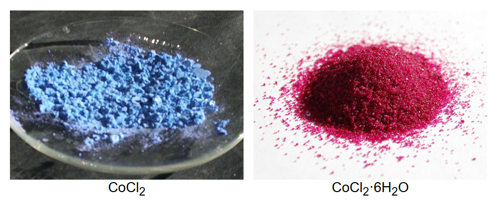

염화코발트 (Cobalt(II) Chloride)

쉽게 풀면
염화코발트는 무수물일 때는 파란색을 띠지만, 물을 흡수하여 육수화물(CoCl2·6H2O)이 되면 분홍색으로 변한다. 이 색 변화가 매우 뚜렷하고 가역적이어서, 실리카겔 건조제에 넣어 습기를 얼마나 흡수했는지 색으로 알려주는 습도 지시제로 흔히 쓰인다. 코발트는 전이금속이기 때문에 다양한 리간드와 결합해 여러 색의 착이온을 만들 수 있는데, 염화코발트 수용액도 리간드 종류나 농도에 따라 분홍, 보라, 파랑 등으로 색이 변하는 것을 관찰할 수 있다.
왜 중요한가
염화코발트는 착물화학 실험에서 배위결합과 리간드 치환 반응을 시각적으로 관찰하기에 좋은 모델 시약이며, 색 변화를 이용한 정성적 수분 검출, 전기도금이나 촉매 전구체 합성 등 다양한 분야에서 코발트 이온의 공급원으로 사용된다. 저렴하고 재현성 있는 색 변화 덕분에 화학 동아리나 실험 키트에서 '숨은 잉크'처럼 가열하면 글씨가 나타나는 놀이형 시연에도 흔히 활용된다. 최근에는 유해성 문제로 실리카겔 지시제 성분에서 다른 무독성 지시제로 대체되는 추세도 함께 언급된다.
무엇이고 어디서 작용하나
- 염화코발트(II)는 화학식 CoCl₂·(H₂O)ₙ(무수물 분자량 129.839 g/mol)이다. 무수물은 파란색, 이수화물은 보라색, 육수화물은 분홍색(‘장미빛 붉은 결정’)이다. 실험실에서는 육수화물을 가장 많이 쓴다.
- 무수물의 밀도는 3.356 g/cm³이다. 녹는점은 무수물 726 °C, 일수화물 140 °C, 이수화물 100 °C, 육수화물 86 °C이고 끓는점은 1,049 °C이다.
- 물에 녹는 정도는 0 °C에서 43.6 g/100 mL, 20 °C에서 52.9 g/100 mL, 96 °C에서 105 g/100 mL이다. 메탄올(38.5 g/100 mL), 아세톤(8.6 g/100 mL), 에탄올, 피리딘, 글리세롤에도 녹는다.
- 묽은 수용액에는 [Co(H₂O)₆]²⁺ 이온이 있다. 진한 용액은 실온에서 붉고 뜨거우면 파랗게 변한다.
주요 기능과 기전
- 습도 지시약: 마르면 파랗고 수화되면 분홍색이 되는 성질로, 시험지와 실리카겔 건조제에 입혀 건조제가 다 쓰였는지 보여 준다. 코발트 염화물이 고전적인 지시약이다.
- 투명 잉크: 가열하면 파랗게 변한다.
- 연구: 동물에서 폐동맥 고혈압 모형을 만드는 데 쓴다. 코발토센, 테트라클로로코발트산염 같은 다른 코발트 화합물의 전구체이기도 하다.
연구에서 다루는 방식
- 독성: 쥐의 경구 LD₅₀은 80 mg/kg이다. IARC는 2B군(발암 가능성)으로 분류한다. 만성 노출은 ‘맥주 애호가 심근병증’ 같은 심각한 건강 영향과 연결되었다. 2005~06년에 여덟 번째로 흔한 첩포 시험 알레르겐(8.4%)이었다.
- 규제: 유럽연합은 2000년 7월 이 물질을 독성 물질로 재분류했고, 암 연관성 때문에 실리카겔에 쓰는 것이 유럽에서 금지되었다고 서술된다. 지시약이 든 실리카겔은 메틸 바이올렛(역시 독성, 발암 가능성), 철염으로 대체되기도 한다.
- 논문에서는 지시약을 쓴 경우 사용한 수화 형태, 농도, 안전 취급(독성, 발암 가능성) 정보를 함께 적는다.
논문에서는 이렇게 쓰입니다
실제 논문에서
국내 학술지 논문에서 이 용어가 쓰인 문장을 그대로 옮겼다. 제목·학술지·연도와 원문 링크를 함께 적었다.
“염화코발트 용액을 제조하기 위하여, 물과 에탄올은 부피 비율로 10%와 90%로 고정하고, 용해되는 염화코발트의양을 다양하게 변화시켰다.”
가역 감온 변색 겔형 염화 코발트/polyvinyl butyral을 이용한 온도 감지 광섬유 센서 연구, Korean Chemical Engineering Research(HWAHAK KONGHAK), 2014 · KCI 한국학술지인용색인 · 원문 보기 ↗
조금 더 깊게 보면
수화 상태에 따른 색 변화는 Co2+ 주위에 배위하는 물 분자 수와 배위 기하구조가 달라지면서 d-d 전이 흡수 파장이 이동하기 때문에 나타난다. 고체 무수 CoCl2는 CdCl2형 구조에서 Co(II)가 팔면체 배위를 이루고, 분홍색 수용액에 염산을 넣으면 사면체형 [CoCl4]2−가 생겨 파랗게 변한다. 이처럼 배위 환경이 달라지면 결정장 갈라짐 에너지가 달라져 눈에 보이는 색 차이로 나타난다. 코발트 이온은 리간드의 종류뿐 아니라 배위수(4배위 사면체형과 6배위 팔면체형)에 따라서도 색이 크게 달라져, 같은 원소라도 주변 환경에 따라 전혀 다른 색을 낼 수 있다는 배위화학의 핵심 원리를 잘 보여준다.
주의할 점
코발트 화합물은 발암성이 의심되는 유독물질로 분류되므로 염화코발트 취급 시 분진 흡입과 피부 접촉을 피하고 보호구를 착용해야 하며, 폐액은 지정된 절차에 따라 처리해야 한다. 색이 예쁘다고 해서 안전한 물질로 오해하지 않도록 주의가 필요하다.
참고 문헌
- Wikipedia contributors. (n.d.). Cobalt(II) chloride. Wikipedia.
- Wikipedia contributors. (n.d.). Silica gel. Wikipedia.